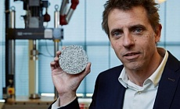

|
Вікна мають вирішальне значення у енергоефективному будівництвіПо статистиці, 90% всього свого часу ми проводимо всередині приміщень і на життєзабезпечення приміщень витрачається 40% всієї виробленої світової енергії. |
.jpg) Під Києвом введено в експлуатацію перший в Україні серійний енергоефективний будинокРічне споживання енергії будинком OptimaHouse буде на 65% нижче, ніж у звичайних будинків аналогічного розміру. |
Комплекс «розумних» екобудинків під Барселоною управляється за допомогою мобільних додатківВ помешканнях із залізобетонних модулів контроль за системою безпеки, освітленням і економією електроенергії здійснюється за допомогою мобільного додатку. У цьому комплексі використовуються виключно поновлювані джерела енергії. |
В Нідерландах створили екоміст, що генерує енергію для навколишніх будинківАрхітектурна компанія Benthem Crouwel Architects запустила в експлуатацію міст для пішоходів і велосипедистів протяжністю 250 метрів у місті Гертогенбос (південь Нідерландів). Новобудова оснащена великим сонячним колектором, що генерує електрику для живлення навколишніх будинків. |
В Нідерландах розробили 3D-принтер, що друкує стіни з екологічно чистого бетонуГолландська компанія CyBe Additive Industries презентувала роботу своїх останніх винаходів. Розробники компанії створили інноваційний 3D-принтер-маніпулятор, що здатен будувати різні конструкції зі спеціального типу екологічно чистого бетону, який також створено в стінах CyBe. |
У Колумбії будують будинки з використаних автомобільних шинУтилізація шин, що практично не розкладаються в звичайних умовах, стала серйозною проблемою великих міст світу, в тому числі і Боготи. Але якщо використовувати їх для будівництва споруд, то вони перетворюються в практично вічну цеглу. |
На Рівненщині будують енергоефективну багатоповерхівку, де рахунки за тепло будуть на 30% нижчимиУ Кузнецовську (Рівненська область) збудують енергоефективну багатоповерхівку, де рахунки за тепло будуть меншими на 20-30%. |
Вчені створили бетон, який самостійно відновлюється за рахунок бактерійМікробіолог Хедрік Джонкерс із Делфтського технічного університету розробив бетон, якому бактерії надають здатність до самовідновлення. |
Французькі вчені отримали екологічно чистий біоасфальт з мікроводоростейНещодавно французьким вченим вдалося отримати з водоростей біоасфальт, що за своїми властивостями дуже близький до звичайного асфальту. Результати їх розробок були опубліковані в журналі «ACS Sustainable Chemistry & Engineering». |
У Львові побудують будинок для ІТ-фахівців, що працюватиме на ВДЕ«Айтішніки» зі Львова планують збудувати будинок на 72 квартири, придбати які зможуть виключно IT-фахівці, причому майже за собівартістю. Крім того, будинок проектується так, щоб з часом повністю відмовитися від газу і перейти на альтернативні джерела енергії. |
Виконав учень 12 групи: Булига Олег |